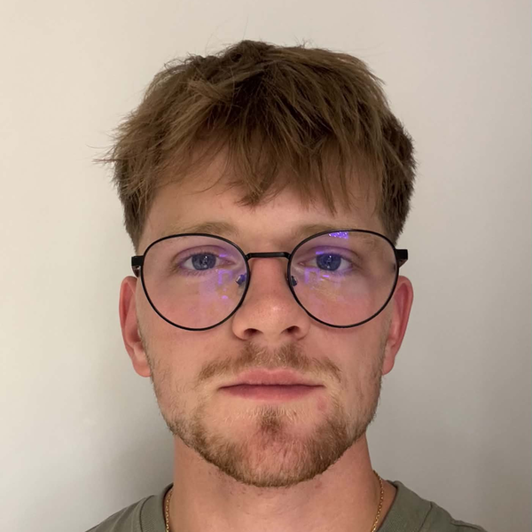

Korpuslab, RAG assistant for Slovak tax law (prototype)
Directed a 3-agent team (Claude Code, Codex, Kimi). 864 automated tests pass.

IT student at VUT FIT Brno. I build software by directing AI coding agents: I set the scope, review every step and tune their autonomy so the work stays sharp.
I am a first-year IT student at Brno University of Technology (VUT FIT), looking for a paid internship or part-time job in software or AI.
I build software by directing AI coding agents (Claude Code, Codex). I write the specs, have every change reviewed and tested, and decide what ships. Since June 2026 that produced about 5,700 commits across my projects, with real tests before anything counts as done.
What I built so far:
Cambridge A Levels (June 2026): Mathematics A*, Computer Science A*, Physics A.
Slovak native, Czech B2, English C1.
Code and write-ups: github.com/samooo221
Directed a 3-agent team (Claude Code, Codex, Kimi). 864 automated tests pass.
Extended an MIT-licensed plugin; my evals: mean context per reply fell from 214k to 133k tokens.
Two payment checks before an order counts as paid.